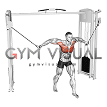

High to Low Cable Fly
1. Adjust the pulleys on the cable machine to the highest setting and attach the handles.
2. Stand in the middle of the machine with one foot slightly in front of the other for balance. With your arms extended out to the sides, grab the handles and bring them down and across your body in a sweeping motion until your hands meet at the bottom in front of your waist.
3. Slowly release the handles and bring them back up to the starting position, keeping your arms slightly bent throughout the movement. Repeat for desired number of reps.

Low to High Cable Fly
1. Stand in front of the cable machine and attach two single grip handles at the bottom of the machine.
2. Grab the handles and take a step back with one foot, keeping your core engaged and your back straight.
3. With your arms slightly bent, bring your hands up and together in a semicircular motion until they meet above your head. Slowly return to the starting position and repeat for the desired number of reps.